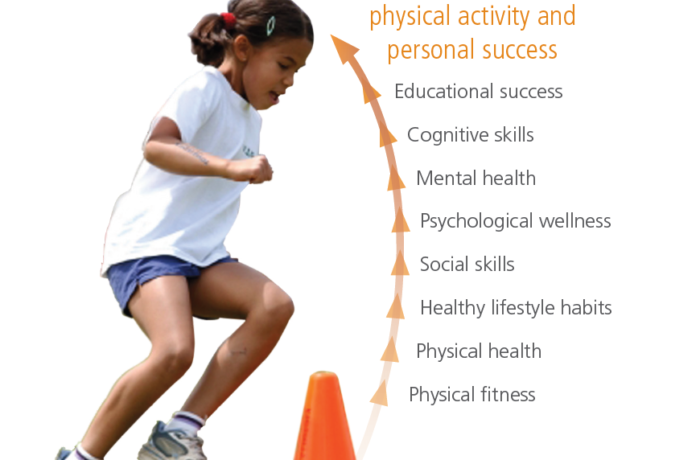

Why should this matter to me
The benefits of physical literacy aren’t limited to physical health. It also improves academic performance, cognitive skills, mental health, psychological wellness, social skills, and healthy lifestyle habits. Thus, all children should master fundamental movement skills and develop physical literacy. Physical literacy is just as important as the ability to read and write!